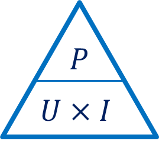

Je connais la puissance de la lampe. Je connais la tension de la prise qui était indiquée sur le disjoncteur principal. Quelle est, en ampères, la valeur de l'intensité qui traverse la lampe lorsqu'elle est allumée ?
Indice : 